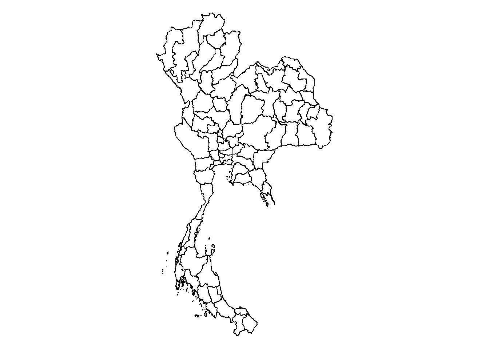

pacman::p_load(sf, st, lubridate, tidyverse, tmap, ggplot2, spatstat)Take-home Exercise 3: Prototyping Modules for Geospatial Analytics Shiny Application
1.0 Loading Packages
2.0 Importing Datasets into R Environment
In this exercise, we will be using the following datasets:
| Data | Type | Format |
|---|---|---|
| ➡️Thailand Road Accident [2019-2022] | Aspatial | .csv |
| ➡️Thailand Subnational Administrative Boundaries | Geospatial | .shp |
| Geofabrik’s OpenStreetMap road data for Thailand | Geospatial | .shp |
2.1 Importing Geospatial Data
The Thailand Subnational Administrative Boundaries dataset is available in ESRI shapefile format. It comprises the administrative boundaries at various levels within Thailand.
Level 0: country
Level 1: province
Level 2: district
Level 3: sub-district or tambon
thailand_sf <- st_read(dsn = "data/geospatial",
layer = "tha_admbnda_adm1_rtsd_20220121")Reading layer `tha_admbnda_adm1_rtsd_20220121' from data source
`C:\kt526\IS415-GAA\Take-home_Ex\Take-home_Ex03\data\geospatial'
using driver `ESRI Shapefile'
Simple feature collection with 77 features and 16 fields
Geometry type: MULTIPOLYGON
Dimension: XY
Bounding box: xmin: 97.34336 ymin: 5.613038 xmax: 105.637 ymax: 20.46507
Geodetic CRS: WGS 84There are a total of 77 provinces in Thailand.
2.2 Importing Aspatial Data
accidents <- read_csv("data/aspatial/thai_road_accident_2019_2022.csv")3.0 Data Wrangling
3.1 Preparing a study area layer by provinces
3.1.1 Extracting relevant columns
Firstly, we use the colnames() to see all the column names present in thailand_sf.
colnames(thailand_sf) [1] "Shape_Leng" "Shape_Area" "ADM1_EN" "ADM1_TH" "ADM1_PCODE"
[6] "ADM1_REF" "ADM1ALT1EN" "ADM1ALT2EN" "ADM1ALT1TH" "ADM1ALT2TH"
[11] "ADM0_EN" "ADM0_TH" "ADM0_PCODE" "date" "validOn"
[16] "validTo" "geometry" thailand_sf_extracted <- thailand_sf %>%
select(ADM1_EN,
ADM1_PCODE,
geometry)par(mar = c(0,0,0,0))
plot(st_geometry(thailand_sf_extracted))
3.2 Preparing a road accident layer
3.2.1 Extracting relevant columns
colnames(accidents) [1] "acc_code" "incident_datetime"
[3] "report_datetime" "province_th"
[5] "province_en" "agency"
[7] "route" "vehicle_type"
[9] "presumed_cause" "accident_type"
[11] "number_of_vehicles_involved" "number_of_fatalities"
[13] "number_of_injuries" "weather_condition"
[15] "latitude" "longitude"
[17] "road_description" "slope_description" Next, from accidents, we will select the following relevant columns so that its easier for our analysis later on.
latitude
longtitude
incident_datetime
province_en
presumed_cause
weather_condition
number_of_fatalities
number_of_injuries
accidents_extracted <- accidents %>%
select(latitude,
longitude,
incident_datetime,
province_en,
presumed_cause,
weather_condition,
number_of_fatalities,
number_of_injuries)str(accidents_extracted)tibble [81,735 × 8] (S3: tbl_df/tbl/data.frame)
$ latitude : num [1:81735] 15 15.2 12.4 18.6 15.9 ...
$ longitude : num [1:81735] 100.9 104.9 99.9 98.8 100.6 ...
$ incident_datetime : POSIXct[1:81735], format: "2019-01-01 00:00:00" "2019-01-01 00:03:00" ...
$ province_en : chr [1:81735] "Loburi" "Ubon Ratchathani" "Prachuap Khiri Khan" "Chiang Mai" ...
$ presumed_cause : chr [1:81735] "driving under the influence of alcohol" "speeding" "speeding" "driving under the influence of alcohol" ...
$ weather_condition : chr [1:81735] "clear" "clear" "clear" "clear" ...
$ number_of_fatalities: num [1:81735] 0 0 1 0 0 0 0 1 3 0 ...
$ number_of_injuries : num [1:81735] 2 2 0 1 0 2 2 0 0 1 ...colSums(is.na(accidents_extracted)) latitude longitude incident_datetime
359 359 0
province_en presumed_cause weather_condition
0 0 0
number_of_fatalities number_of_injuries
0 0 accidents_extracted <- na.omit(accidents_extracted)colSums(is.na(accidents_extracted)) latitude longitude incident_datetime
0 0 0
province_en presumed_cause weather_condition
0 0 0
number_of_fatalities number_of_injuries
0 0 3.1.2 Converting aspatial data into geospatial data
accidents_sf <- st_as_sf(accidents_extracted,
coords = c("longitude", "latitude"),
crs=4326) %>%
st_transform(crs = 4239)